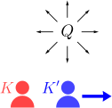
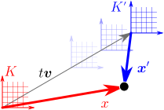
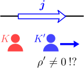
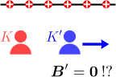
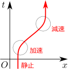
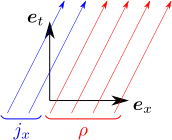
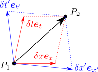

時間変化する電荷・電流密度の場合を考えたい
電磁場中を運動する荷電粒子の運動方程式は、第3章で述べたように
𝑚¨𝒙=𝑞𝑬+𝑞˙𝒙×𝑩(1)
となる（
𝑞
は粒子の電荷）。電場
𝑬
および磁場
𝑩
は、それぞれクーロンの法則（1.3節）およびビオ・サバールの法則（2.3節）により決まる：
𝑬(𝒙)=14𝜋𝜖0∫𝒙′𝜌(𝒙′)̂𝒙−𝒙′|𝒙−𝒙′|2𝑩(𝒙)=𝜇04𝜋∫𝒙′𝒋(𝒙′)×̂𝒙−𝒙′|𝒙−𝒙′|2(2)(3)
よって、運動方程式が確定するので、これまでの目的であった「電場中での荷電粒子の運動
𝒙(𝑡)
の計算」が実行できるようになった。ただし、電荷密度
𝜌(𝒙)
および電流密度
𝒋(𝒙)
は既知であるとする。
しかし、これで終わりではない。これまでは、静的な電荷・電流密度
𝜌,𝒋
の場合しか扱っておらず、これらが時間とともに変化する場合、即ち
𝜌(𝑡,𝒙),𝒋(𝑡,𝒙)
となる場合については、まだ何も言っていない。単純に、式(2)と式(3)の
𝜌(𝒙),𝒋(𝒙)
を
𝜌(𝑡,𝒙),𝒋(𝑡,𝒙)
で置き換えればよいのだろうか。結論から言うと、そう簡単ではないのである。

時間に依存する
𝜌,𝒋
が作る電磁場の法則を得るための1つの方法は、実際に
𝜌,𝒋
を変化させて、その周りの電磁場がどう変化するかを測定し、その結果を吟味することである。しかしここでは、理論的に議論する。方針はこうである。まず、静的な電荷・電流があるとする。その周りにはもちろん静的な電磁場が生じている。この系を
𝐾
とおく。「
𝐾
に対して等速度
𝒗
で動いている」観測者
𝐾′
から見れば、電荷・電流は
−𝒗
で動いているように見える。よって、電磁場もそれに引きずられて「移動する」ことになる。よって、電磁場は時間変化することになる。
𝐾′
の座標系は、ガリレイ変換によって得られるのだから、冒頭の式をガリレイ変換すれば、
𝐾′
から見た電磁場
𝑬′(𝑡,𝒙),𝑩′(𝑡,𝒙)
が計算できる。これにより、動的な場合の法則が、完全ではないかもしれないが、得られるはずである。
この章では、「電磁場のガリレイ変換」を実際に計算する。その結果、なんと、理論に矛盾が生じることが分かる。その後、電荷・電流密度
𝜌,𝒋
の変換則について、「マクスウェル方程式を用いた導出」と、「荷電粒子の世界線を用いた幾何学的な導出」を考え、それらが互いに矛盾することを見る。これらを、以下の3つの節に分けて議論する：
5.1:電磁場𝑬,𝑩のガリレイ変換5.2:電荷・電流密度𝜌,𝒋の変換則（マクスウェル方程式から）5.3:𝜌,𝒋の変換則（荷電粒子の世界線から）
5.1電磁場 𝑬,𝑩 のガリレイ変換
この節では、実際に静電場のガリレイ変換を計算し、得られた電磁場の変換則(6)が、奇妙な矛盾を含むことを見る。
5.1.1電磁場のガリレイ変換：式(6)

静電磁場の系
𝐾
における点
𝒙
を、
𝐾
から見て速度
𝒗
で移動している別の慣性系
𝐾′
から見た時の点
𝒙′
は、ガリレイ変換で与えられる：（力学編第4章の【4.3-注1】）
𝒙′=𝒙−𝑡𝒗(4)
運動方程式(1)を
𝐾′
系から見たもの
𝑚¨𝒙′=[⋯]
に変換するには、上式を式(1)に代入して
𝒙
を消去すれば良い：
𝑚¨𝒙′=𝑞(𝑬+𝒗×𝑩)+𝑞˙𝒙′×𝑩(5)
この
𝐾′
系における電磁場
𝑬′,𝑩′
を求めるには、試験電荷の運動
𝒙′(𝑡)
を測定し、加速度
¨𝒙′
を求めたうえで、運動方程式
𝑚¨𝒙′=𝑞𝑬′+𝑞˙𝒙′×𝑩′
と見比べればよい。今の場合、
¨𝒙′
は式(5)となることが分かっているのだから、
𝑬′,𝑩′
は
𝑬′(𝑡,𝒙′)=𝑬(𝒙)+𝒗×𝑩(𝒙)𝑩′(𝑡,𝒙′)=𝑩(𝒙)}(6)
となる。電場は変化するが、磁場は慣性系によらないのである。右辺は、
𝑬(𝒙)
の代わりに、式(4)を用いて、
𝑬(𝒙′+𝑡𝒗)
としてもよい（
𝑩
についても同様）。
5.1.2式(6)は矛盾を含む
式(6)は、運動方程式をガリレイ変換しただけで得られたものなのだから、実験的にも正しいことは間違いない（少なくとも通常の実験では）。しかし厳密に見れば、第1式も第2式も、何かおかしいのである。

まず、式(6)の第1式には、磁場
𝑩
が現れている。よって、
𝐾
系において
𝑬=𝟎
（即ち
𝜌=0
）である場合であっても、
𝑩≠𝟎
であれば、
𝐾′
系では
𝑬′≠𝟎
（即ち
𝜌′≠0
）となり得ることを示している。例えば、電流が流れている帯電していない直線導線を、電流に沿って運動している別の慣性系
𝐾′
から見ると、
𝒗×𝑩≠𝟎
なので、その導線は帯電して見えるということになるのではないか（以下の5.2節で実際にそうなることを導く）。観測者によって、電荷密度が変化することは、矛盾とまでは言えないが奇妙である。質量密度のような量についても、そのようなことがあるのだろうか。

一方、式(6)の第2式は、磁場
𝑩
が慣性系によらないことを示しているが、これは矛盾を引き起こす。例えば、直線電荷があったとする。電荷が静止していれば、電流は生じないので、
𝐾
系では
𝑩=𝟎
である。これを、直線電荷に沿って運動している系
𝐾′
から見ると、電荷が動いて見えるのだから、電流が発生し、その周りに磁場が存在することになる。しかし、式(6)の第2式は、
𝑩′=𝟎
を主張しており、矛盾している。
ただし、この矛盾を実験的に検証するのは非常に難しい。というのも、通常の実験で作り出せる
𝜌
は非常に小さく、その運動によって生じる磁場は、通常の電流によって生じる磁場に比べて桁違いに小さいのである。実際、
1
秒当たり
1C
の電流（＝
1A
）を流すことは、市販の乾電池を用いて実現可能な程度のものであるが、
1C
の静電荷を用意することは現実的には不可能である。例えば、
1m
離れた
1C
の電荷同士に働く力は、およそ
1010N
という尋常ではない大きさである（
1kg
の物体が地球から受ける重力が
10N
程度である）。しかし、理論的な矛盾を抱えているというは、やはり受け入れがたい。
5.2電荷・電流密度 𝜌,𝒋 の変換則（マクスウェル方程式から）
ガリレイ変換と電磁場の法則は矛盾を抱えていることが分かった。もう少し詳しく見る必要がありそうである。前節では電磁場の変換則について議論したので、この節では、電荷・電流密度の変換則を、特殊な場合について計算し、前節の問題を引き継いでいることを見る。
5.2.1 𝐾′ 系から見ても静電磁場になる場合、電荷・電流密度の変換則が分かる
さて、特殊な場合というのは、
𝐾′
から見ても電磁場が静的となっている場合である。例えば、直線電荷や直線電流を、「直線に沿って運動する別の慣性系
𝐾′
」から観測すればよい。すると、
𝐾′
系から見ても電荷・電流は静的なままなので、電磁場も静的となる。
第4章で見たように、静電磁場
𝑬′,𝑩′
が分かれば、電荷・電流密度
𝜌′,𝒋′
は、マクスウェル方程式（ガウスの法則およびアンペールの法則）
𝜌′=𝜖0∇′T𝑬′𝒋′=1𝜇0∇′×𝑩′⎫{
{⎬{
{⎭(7)
により求めることができる。
𝑬′,𝑩′
の変換則(6)と上式を用いれば、
𝜌′,𝒋′
も分かることになる。（式(7)は静電磁場を前提として求めたものなので、
𝐾′
系でも静電磁場になるような場合に限定する必要があったのである。）なお、
𝜖0,𝜇0
が慣性系によらないことは、相対性原理（力学編第4章の【4.2-注1】）から言える。
5.2.2電荷・電流密度の変換則：式(8)
実際に式(7)を用いて、電荷・電流密度
𝜌′,𝒋′
を計算するには、式(7)に、電磁場の変換則(6)を代入すればよい。
∇′=∇
であること（ガリレイ変換は座標だけ見れば単なる平行移動なので、座標の微分は変化しない）に注意すると
𝜌′=𝜖0∇′T𝑬′=𝜖0∇T(𝑬+𝒗×𝑩)=𝜖0∇T𝑬−𝜖0𝒗T∇×𝑩=𝜌−𝜖0𝜇0𝒗T𝒋𝒋′=1𝜇0∇′×𝑩′=1𝜇0∇×𝑩=𝒋
となる。よって、
𝜌′,𝒋′
の変換則は以下のようになる：
𝜌′(𝑡,𝒙′)=𝜌(𝒙)−𝜖0𝜇0𝒗T𝒋(𝒙)𝒋′(𝑡,𝒙′)=𝒋(𝒙)}(8)
(𝑡,𝒙′)
と
𝒙
は式(4)の関係を満たす。今は
𝜌,𝒋
は静的なので、実際には
𝑡
依存性はない。
この式はやはり、前節で述べた奇妙な点を引き継いでいる。第1式は、慣性系によって電荷密度が変化することを示している。特に、
𝐾
系で電荷密度が
𝜌=0
であっても、
𝐾′
では
𝜌′≠0
となる可能性がある。ただし、
𝜖0𝜇0≈10−17m−2⋅s2
と非常に小さいので、右辺第2項が作る電場は、あったとしても通常の観測では確認できない。一方、第2式は、電流密度が慣性系によらないことを示している。しかし、上述のように、静止した直線電荷を、直線に沿って動いている観測者から見れば、電流が発生しているように見えるはずなので、やはり矛盾している（測定にはまずかからない大きさではあるが）。
5.3 𝜌,𝒋 の変換則（荷電粒子の世界線から）
この節では、電子の世界線を用いて、幾何学的に
𝜌,𝒋
のガリレイ変換を求めると、式(16)が得られる。これは、前節の式(8)と異なっている。
電荷・電流密度
𝜌,𝒋
の変換則は、前章のように電磁場の測定から逆算する方法以外にも、座標変換から直接求めることができる。例えば、電子のみが分布している場合、
𝜌
は「単位体積の中の電子の数」と「電子1個の電荷」の積なのだから、座標変換によよる単位体積の変化を求めれば、
𝜌
の変化も決まることになる。
5.3.1 𝜌,𝒋 は、単位ベクトルを横切る世界線の数で表せる：式(9)、式(10)

まず、右図のように、時空図を描く。時空図は、横軸・縦軸にそれぞれ
𝑥
軸・
𝑡
軸を取った図である。時空図上において、1つの電子は、同図赤線のように1本の曲線を描く。この曲線を、（電子の）世界線という。時空図は本来、時間1次元＋空間3次元の4次元の図になるが、簡単のため、空間は1次元で考えることにする。

次に、電荷分布がある場合、それを電子の集合であるとみなすと、時空図は無数の電子の世界線で覆われることになる。（電子でなくてもよいが、思考実験としては電子を考えておけば十分である。）さて、電荷密度
𝜌
は、単位体積内に存在する電荷に等しいので、時空図上で見れば、「大きさが
1m
の単位ベクトル
𝒆𝑥
を横切る電子の世界線の数
𝑛𝑥→𝑡
」（右図赤色部分）と「1つの電子の電荷
−𝑒
」の積となる：（
𝑛𝑥→𝑡
は
𝒆𝑥
を
𝒆𝑡
方向に横切る世界線の数）
𝜌=−𝑒⋅𝑛𝑥→𝑡(9)
電荷密度の変化が細かくて単位ベクトルだと大きすぎるという場合には、例えば大きさが
10−3m
のベクトルを使って得られた
𝑛𝑥→𝑡
を
103
倍すればよい。電子以外の荷電粒子が存在していれば、それらの寄与を足し合わせる。
同様に、電流密度
𝑗𝑥
は、1秒間にある点を通過する電荷に等しいので、「大きさが
1s
の単位ベクトル
𝒆𝑡
を横切る電子の世界線の数
𝑛𝑡→𝑥
」（同図青色部分）を用いて
𝑗𝑥=−𝑒⋅𝑛𝑡→𝑥(10)
となる。なお、
𝑗𝑥
は符号を持つが、同図のように
𝒆𝑥
方向に横切る時に
𝑛𝑡→𝑥
が正、逆方向に横切る時に負となるように定義すればよい。
𝑛𝑥→𝑡
で方向を指定して定義したのはこれに合わせるためである。
上記は、空間が1次元の場合であるが、多次元の場合にも容易に拡張できる。実際、2次元空間の場合は
𝜌=−𝑒⋅𝑛𝑥𝑦→𝑡𝑗𝑥=−𝑒⋅𝑛𝑡𝑦→𝑥𝑗𝑦=−𝑒⋅𝑛𝑡𝑥→𝑦
となる。ただし、
𝑛𝑥𝑦→𝑡
は2つの単位ベクトル
𝒆𝑥,𝒆𝑦
が作る平行四辺形を
𝒆𝑡
方向に通過する電子の数である（他も同様）。3次元空間の場合も同様である。
5.3.2基底ベクトルの変換則：式(15)
上記のように考えて何がうれしいかというと、このように幾何学的に考えることで、座標変換のもとで単位ベクトル
𝒆𝑡,𝒆𝑥,𝒆𝑦,𝒆𝑧
がどのように変化するかが分かれば、通過する世界線の数の変換も分かるので、電荷・電流密度
𝜌,𝒋
の変換則が決まるのである。
ただし、電子の電荷が、速度によって変化してしまうと、それを考慮に入れる必要が出てくる。ここでは、電子（などの荷電粒子）の電荷がその速度に依存しないことが実験的に確認されているとする（電荷が速度に依存すると、電荷が保存しなくなる）。そうすると相対性原理により、電子の電荷は、速度に依存せず、どの慣性系から見ても同じ値になる。
まず、単位ベクトルの変換則が知りたい。時間・空間座標
𝑡,𝒙
をまとめて
𝗑
と表し、単位ベクトル
𝒆𝑡,𝒆𝑥,𝒆𝑦,𝒆𝑧
をまとめて
𝖾
と表すことにする（このように装飾の無いフォントをサンセリフ体という）：
𝗑=⎡⎢
⎢
⎢
⎢⎣𝑡𝑥𝑦𝑧⎤⎥
⎥
⎥
⎥⎦,𝖾=⎡⎢
⎢
⎢
⎢⎣𝒆𝑡𝒆𝑥𝒆𝑦𝒆𝑧⎤⎥
⎥
⎥
⎥⎦
𝖾
が座標変換でどのように変換するかは、純粋に幾何学的な問題であり、以下のようになる：（以下の【5.3-注1】）
𝖾′=Λ−T𝖾(11)
（
Λ
はヤコビ行列。）
【5.3-注1】単位ベクトルの変換則：式(12)
座標系
𝗑
から座標系
𝗑′
に座標変換した時、ある時空の点
𝑃
における変換後の単位ベクトル
𝖾′
は、以下のようになる：
𝖾′=Λ−T𝖾Λ≡𝑑𝗑′𝑑𝗑=[𝜕𝑡𝗑′𝜕𝑥𝗑′𝜕𝑦𝗑′𝜕𝑧𝗑′](12)
Λ
は点
𝑃
における値であり、ヤコビ行列と呼ばれる。なお、
Λ−T
は
(Λ−1)T
の略記である。
導出

右図のように、「時空上の点
𝑃0
を始点とし
𝑃1
を終点とする微小なベクトル
←←←←←←→𝑃1𝑃2
」を、2つの座標系で表現すると以下のようになる：
←←←←←←→𝑃1𝑃2≐𝛿𝗑T𝖾≐(𝛿𝗑′)T𝖾′
これの最右辺に、微分の定義
𝛿𝗑′≐𝑑𝗑′𝑑𝗑𝛿𝗑
を代入すると
𝛿𝗑T𝖾≐𝛿𝗑T(𝑑𝗑′𝑑𝗑)T𝖾′
これが、任意の
𝛿𝗑
に対して成り立つので、式(12)を得る。
◼
デカルト座標→極座標のように、非線形な座標変換の場合、
Λ
は時空の点に依存することになる。
5.3.3 𝜌,𝒋 の変換則：式(15)
後は、単位ベクトルが作る平行六面体を通過する電子の世界線の数がどのように変化するかが分かれば、目的である
𝜌,𝒋
の変換則が求められることになる。
簡単のため、まず2次元時空を考える（時間1次元と空間1次元）。基底ベクトルを通過する世界線の数を考えているのだが、まず一般的に、任意の微小ベクトル
𝛿𝗑
を通過する世界線の数
𝛿𝑛
を考える。世界線の方向を向くベクトルを
𝗃
と書く（大きさは後で決める）。
𝛿𝑛
は、
𝛿𝗑
と
𝗃
の1次関数であり、
𝛿𝗑
に
𝗃
と平行なベクトルを足しても
𝛿𝑛
は変化しない。このような性質を持った量に見覚えがあるだろう。面積、あるいは、行列式である。
即ち、
𝛿𝑛
は、
𝗃
と
𝛿𝗑
が作る平行四辺形の「面積」、あるいは、行列式
|𝗃𝛿𝗑|
に比例することになる（1次近似の範囲で）。ここで、
𝗃
の大きさが不定だったので、等号が成り立つように決めることができる：
𝛿𝑛≐|𝗃𝛿𝗑|
。基本的にはこれでよいのだが、単純な面積と違って、
𝛿𝑛
は、どの方向に通過するかによって符が変わる。そこで、
𝗃,𝛿𝗑
の順で右手系をなしている時に正になるように定義すれば、座標変転で向きが変わったりすることはなくなる（時空の右手系は、時間軸が時間の進む方向で、空間の基底が右手系をなしている場合とする）。そうすれば、結局以下のようになる：
𝛿𝑛≐𝑠|𝗃𝛿𝗑|
𝑠
は、座標系が右手系の時
+1
、左手系の時
−1
である（通常は右手系しか考えないので
𝑠=+1
としておけばよい）。
空間が3次元（4次元時空）の場合は、同様に
𝛿𝑛≐𝑠|𝗃𝛿𝗑1𝛿𝗑2𝛿𝗑3|(13)
となる。
𝛿𝑛
は、3つの微小ベクトル
𝛿𝗑1,𝛿𝗑2,𝛿𝗑3
が作る平行六面体を通過する世界線の数である。そして、
𝗃
の成分は
𝗃=⎡⎢
⎢
⎢
⎢⎣𝜌𝑗𝑥𝑗𝑦𝑗𝑧⎤⎥
⎥
⎥
⎥⎦
となる。これは、式(13)に基底ベクトルを入れてみれば分かる。式(13)の左辺が座標変換で変わらないことから、
𝗃
の変換則が得られる：（以下の【5.3-注2】）
𝗃′=Λ|det(Λ)|𝗃(14)
【5.3-注2】電荷・電流密度の変換則：式(15)
ある座標系
𝗑
における電荷・電流密度
𝗃
を、別の座標系
𝗑′
で表すと、以下のようになる：
𝗃′=Λ|det(Λ)|𝗃Λ≡𝑑𝗑′𝑑𝗑(15)
Λ
は、式(12)のものと同じヤコビ行列であり、分母の
|det(Λ)|
は行列式の絶対値である。
導出
式(13)を、
𝐾
系から
𝐾′
系に座標変換すれば
𝛿𝑛≐𝑠|𝗃𝛿𝗑1𝛿𝗑2𝛿𝗑3|∣
∣
∣
∣代入：𝛿𝗑≐𝑑𝗑𝑑𝗑′𝛿𝗑′=Λ−1𝛿𝗑′≐𝑠|Λ−1Λ𝗃Λ−1𝛿𝗑′1Λ−1𝛿𝗑′2Λ−1𝛿𝗑′3|∣行列式の公式：|𝐴𝒂𝐴𝒃⋯|=|𝐴||𝒂𝒃⋯|=𝑠∣Λ−1∣|Λ𝗃𝛿𝗑′1𝛿𝗑′2𝛿𝗑′3|∣
∣
∣
∣
∣変換後の𝑠′は、∣Λ−1∣の符号と連動するので𝑠′=𝑠⋅sign∣Λ−1∣∴𝑠∣Λ−1∣=𝑠′∣det(Λ−1)∣=𝑠′∣Λ|det(Λ)|𝗃𝛿𝗑′1𝛿𝗑′2𝛿𝗑′3∣
最終行の緑字部分が変換後の
𝗃′
となるわけだが、式(15)と確かに一致している。
◼
5.3.4 𝜌,𝒋 のガリレイ変換：式(16)
式(14)は、あらゆる座標変換で成り立つ。今考えているガリレイ変換：
[𝑡′𝒙′]=[1𝟎T−𝒗1][𝑡𝒙]
の場合、ヤコビ行列：
Λ=[1𝟎T−𝒗1]
を代入すれば、以下のようになる：
[𝜌′𝒋′]=Λ|Λ|[𝜌𝒋]=[𝜌𝒋−𝜌𝒗](16)
これは、マクスウェル方程式から導いた変換則(8)と異なる値である。電荷が
−𝒗
で動いているように見えるので、電流に
−𝜌𝒗
が加わった形のこちらのほうが自然である。